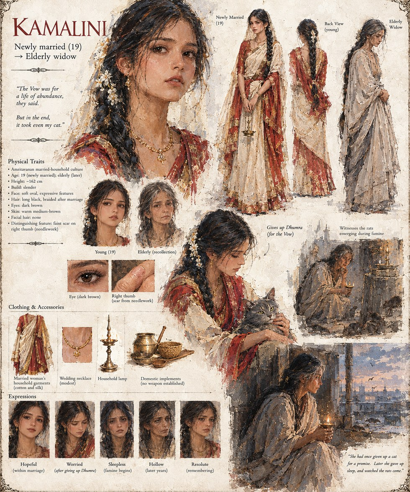

Kamalini
Bride of Amritavana · Later, an Elderly Widow
Married at nineteen into a household that keeps an Anantavrata the way other families keep a household shrine. Her mother-in-law decides there isn't room in the house for both the flower and Kamalini's cat, Dhumra, and Kamalini — newly married, unwilling yet to make her first fight one worth losing — carries him to the kitchen door herself.
She keeps the flower for the rest of her life, through widowhood and old age, and is never on record saying whether it was worth the trade.
“The Vow was for a life of abundance, they said. But in the end, it took even my cat.”
Appears in The Songs Never Mention the Cats